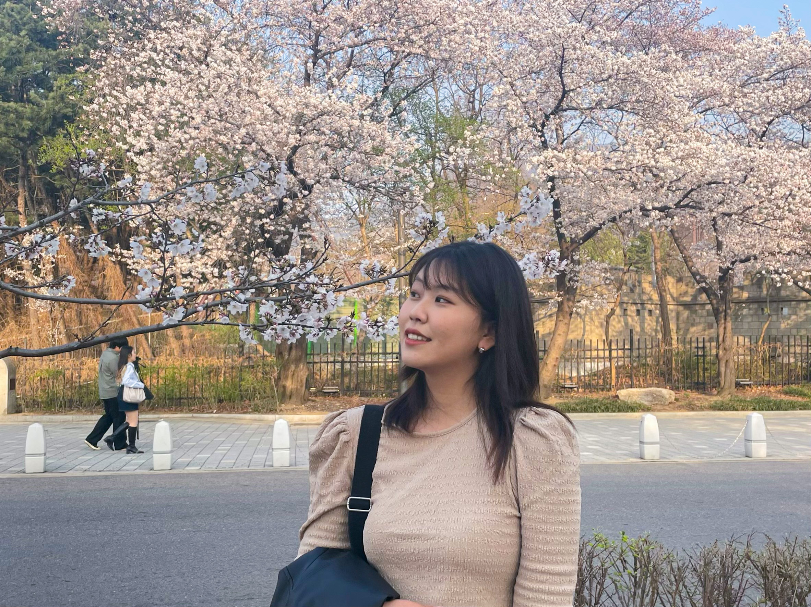

박민주
분류:
2002년 출생
|
의왕시 출신 인물
|
단국대학교 출신
박민주
한국명
박민주(朴玟珠, Park Minju)
본관
밀양 박씨
출생
2002년
5월 20일
(만 20세)
경기도
군포시
국적
대한민국
거주지
경기도
의왕시
신체
A형
| 175cm | 250mm
학력
안양동초등학교
(전학)
백운초등학교
(졸업)
갈뫼중학교
(졸업)
우성고등학교
(졸업)
단국대학교
(모바일시스템공학/재학)
종교
무종교
취미
뜨개질, 사진찍기, 맛집탐방
링크
1. 개요

대한민국
국적의
단국대학교
모바일시스템공학 전공 재학생.